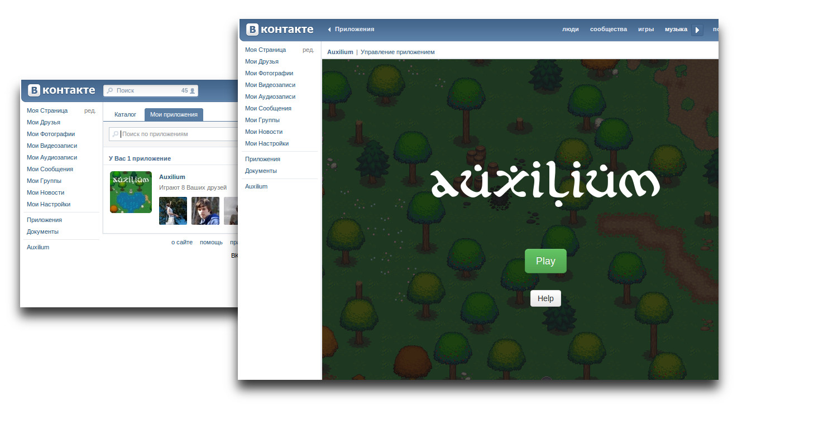

We are interested in studying people behaviour in various situations.
For example – Stanford prison experiment (1971), will people behave differently in social network than in real experiment?
Our Goal
To perform famous Turing Test within social networks. The participants do not know about the goal of the test, therefore, may not intentionally influence its results.
Turing Test Modification
Communication is limited to a fixed set of commands.
Every participiant is a judge.
Points are taken, if you cooperate with a robot, rather than with a human.
Auxilium Key Features
Unified platfrom
Deployed onto major social networks
Easy to mantain
Open to researches
Auxilium [aʊkˈsi.li.um] noun. Help, aid.
Current Progress

Our Research Plans
Communication of pepole on a subsets of language.
Improve non-playable characters intelligence based on gathered data.